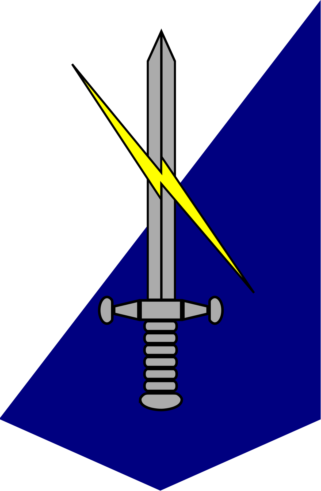
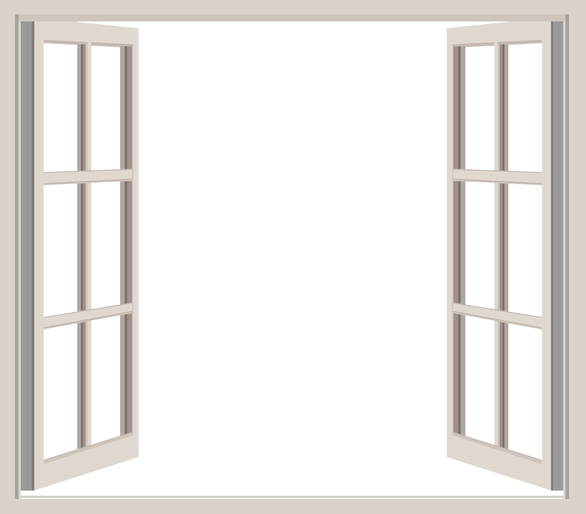
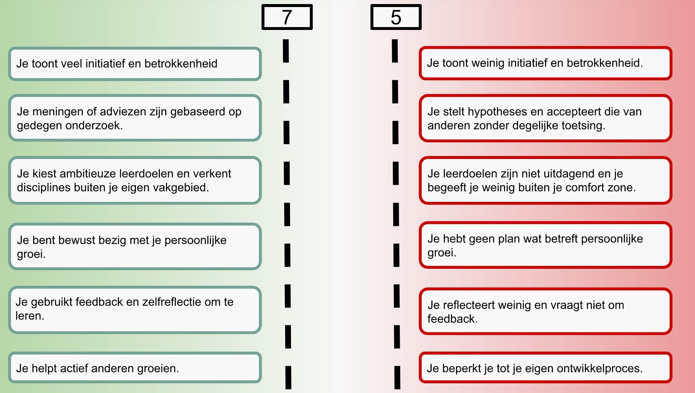

Tijdens de minor heb ik een project gedaan voor Defensie.
Dit was op de afdeling Kenniscentrum C2OstCo & CEMA LAND van het regiment verbindingstroepen
Plan van Aanpak & ontdekken organsiatie
Voor het project zijn wij als eerste begonnen met het creëren van het plan van aanpak op basis van de gesprekken met Luitenant-Kolonel Vennik en Wanda Eikens. Tegelijkertijd hebben wij kennis gemaakt met Defensie en de afdeling. Omdat Defensie een grote organisatie is hebben wij langere tijd nodig gehad voordat wij uiteindelijk achter alle informatie betreffende de opdracht kwamen. Zo wisten wij niet hoe een commandopost werkt, is ingedeeld of welke vormen deze kan aannemen.
In onze eerste versie van het plan van aanpak was er voornamelijk sprake van extern gericht kijken naar verschillende slimme technologiën. Uiteindelijk is het onderzoek meer intern gericht omdat meerdere afdelingen bij defensie met slimme technologiën al bezig waren of geïmplementeerd hadden.
Tijdens verschillende weken hebben wij met zoveel mogelijk afdelingen en personen gepraat en vergaderingen ingeschoten om tot de informatie te komen die we nodig hadden. Zo zijn we eerst langs verschillende medewerkers van het kenniscentrum gegaan om te controleren wat er bij defensie te vinden was en wat zij erover wisten. Nadat wij meerdere mensen hebben gesproken hebben wij contact gezocht met de anderen afdelingen. De eerste vergadering had onze begleidster Wanda geregeld alleen hebben wij daarna zelf het initiatief genomen om dit zelf te doen. Deze afdelingen hebben ons ook weer doorgewezen naar andere afdelingen, waardoor wij uiteindleijk bij genoeg afdelingen zijn langsgegaan om tot een advies te komen.
Advies & Slide Deck
Nadat wij onderzoek hadden gedaan naar de verschillende technologiën die defensie al kan, hebben wij een slide deck opgezet waarin alle technologiën naar voren komen. Maar ook wat een commandopost en het project zelf inhoudt. Aan de hand van de voordelen en nadelen van verschillende technologiën hebben wij deze vergeleken en zijn tot een advies gekomen.
Voor dit onderzoek hebben wij gebruikt gemaakt van empirisch onderzoek bij Defensie zelf, hiervoor zijn wij langs gegaan bij 6 verschillende afdelingen maar hebben wij ook op de afdeling zelf verschillende mensen gesproken. Wij hebben ook theoretisch onderzoek gaan de verschillende technologiën, hierbij hebben wij ook gekeken naar wat de specificaties zijn en wat er aangeschaft moet worden om het te kunnen gebruiken.
Vanuit onze wens en die van defensie hebben wij gekozen om het project in een slide deck te zetten. In de slide deck is de onderbouwing te vinden in de notities. Deze zal ik dan ook niet hier behandelen.
Download hier de volgende documenten:
Het plan van aanpak:
Word: PVA
De slide deck
Powerpoint: Slide Deck
Competenties & Wat heb ik geleerd
Competentie: Meningen en adviezen op gedegen onderzoek.
Tijdens het project heb ik geleerd hoe er moet worden omgegaan met een grote en stugge organisatie als Defensie. We hebben vooral goed moeten kijken bij wie wat aanwezig is waardoor informatie vinden lastig gaat. Omdat het vinden van informatie lastiger was lijkt het advies wat wij uiteindelijk hebben opgeleverd niet zo groot als bij andere opdrachtgevers. Maar wat ook met Wanda Eikens was besproken is dat voor de tijd die we hadden in de organisatie en de eigen kennis wij alles eruit hebben gehaald wat mogelijk was. Tijdens het project hebben wij gebruikt gemaakt van informatie van verschillende informatie van afdelingen maar ook van het internet om te controleren wat er in de civiele wereld al werd gebruikt. Hierdoor vind ik dat er gedegen onderzoek is gedaan door te controleren wat er beschikbaar is intern als extern.
Maar hebben wij ook gezamenlijk gekeken naar verschillende onderwerpen als team zodat we zeker zouden zijn dat de informatie die er staat ook door iedereen wordt geaccepteerd. Zo had ik vaak nog de notities van meetings op mijn laptop waarmee ik de opgeschreven gegevens controleerde.
Competentie: Feedback en zelfreflectie om te leren.
Tijdens het project hebben wij peer-feedback momenten gehad waarbij wij besproken hebben hoe het gaat en wat er beter kan of wat er juist goed gaat. Vanuit mijn mede-collega's heb ik vooral te horen gekregen dat ik op sociaal vlak minder mezelf toon en meer initiatief kan nemen. Zoals het woord nemen tijdens gesprekken met afdelingen of presentaties. Hieraan heb ik gewerkt door meer te de leiding te nemen en ook om tijdens de seminar achter de stand te staan om te presenteren en vertellen over het project en advies.
Competentie: Ambitieuze leerdoelen & leren buiten mijn vakgebied.
Tijdens het project heb ik ook veel geleerd over VR/AR en de eigenschappen. Zo heb je verschillende software waarvan het meeste werkt op unity, maar ook dat de huidige AR brillen buiten niet werken door de infrarode straling van de zon. Hiervoor heb ik nog nooit gewerkt met VR/AR, dit heeft mij dus weer een ervaring rijker gemaakt met deze technologiën en de voor en nadelen ervan.
Competentie: Actief helpen groeien van anderen.
In het project groepje zaten 2 andere bedrijfskundige waardoor wij van elkaar niet veel konden leren maar was het voor ons meer sparren over welke manier of welke informatie er beter was om te gebruiken. Hierdoor hebben wij meer onze ideeën en kennis samengebundeld dan dat we echt elkaar hebben uitgelegd over werkmethodes of theorieën. Ik heb mijn teamgenoten wel geholpen met vragen over bijvoorbeeld HTML website bouwen en de plantenbakje en sensor. Doordat het team al zo bekwaam was over bedrijfskunde heb ik deze competentie niet zo goed uit kunnen voeren als dat ik dacht.
Op de Smart ME site staat bij de competentie ook een gedeelte dat gaat over het project, maar vond dat het daar meer thuis hoorde.


Comptentie: Initiatief en betrokkenheid.
Tijdens het project heb ik geprobeerd zo betrokken mogelijk te zijn en initiatief te tonen. Alleen ben ik van nature een introvert persoon dus is deze stap voor mij af en toe te groot. Waardoor dit niet altijd is gelukt, dan is iemand anders mij al voor met het initiatief nemen om te presenteren. Daarnaast toon ik vaak minder initiatief om op persoonlijk vlak met mijn teamgenoten of werknemers om te gaan. Ik snap dat dit gezien kan worden als een must voor tijdens de opdracht of later in het werkveld, maar ik houd liever mijn werk en privé zo veel mogelijk gescheiden. Hierdoor zal ik niet snel vragen naar een andermans leven terwijl dit wel nodig kan zijn om een positieve sfeer te creëren.
Competentie: Bewust met mijn persoonlijke groei.
Ik had speciaal voor de opdrachtgever van defensie gekozen omdat ik meer wou weten over VR/AR maar voornamelijk over hoe een organisatie die zo groot is te werk gaat. Ik heb hierdoor veel geleerd over de manier waarop er wordt gewerkt en wat er allemaal fout kan gaan als verschillende organen, van een organisatie, langs elkaar innoveren. Door dit project ben ik mij er meer bewust van dat er eerst goed gekeken moet worden na de interne situatie bij een bedrijf, aangezien de oplossing al in gebruik kan zijn bij een andere afdeling, voordat er meteen naar oplossingen wordt gekeken die uit de extern kringen worden gehaald. Dit is zeker iets dat ik zal meenenem voor onderzoeken in de toekomst.